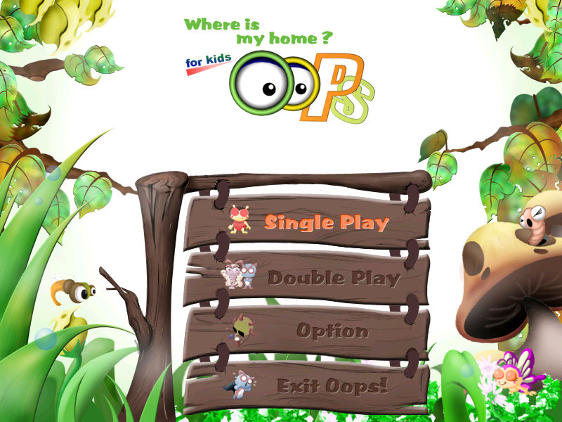
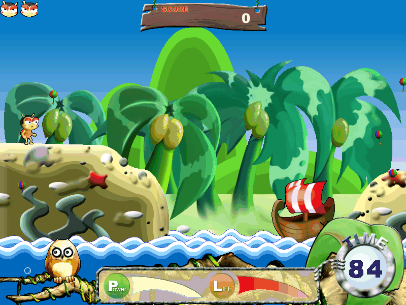

名稱：蟲蟲大作戰 (Oops for Kids: Where is my home?，英文版)
簡介：韓國GAIA 2002年出品的兒童英文單字教學軟體，由Sego代理發行，台灣則由新造科技
代理進口，但並未中文化。遊戲以清版射擊的方式進行，玩家必須在限時內擊中所有
指定的目標，每擊中一個目標便可學習到一個英文單字 [待補]。


保護：光碟+序號（0D43C-3F2D4-2CF32）
備註：VirtualBox需搭配DxWnd（不可全螢幕），或改用VMware+cnc-ddraw。
操作：
左右 = 移動
上下 = 調整射擊角度
Space = 射擊（力度依按壓時間增加，請注意風向進行調整）